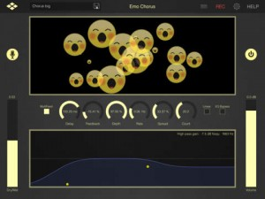
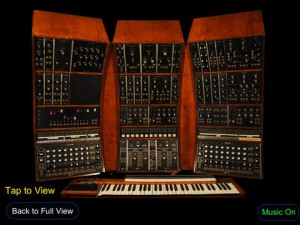
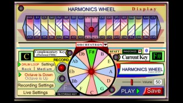
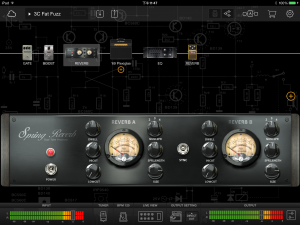
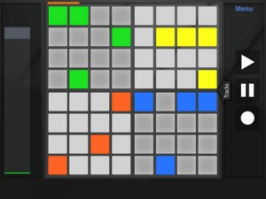
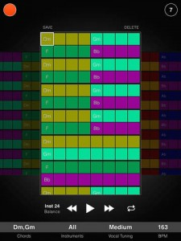
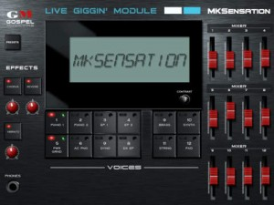
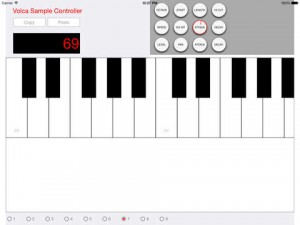
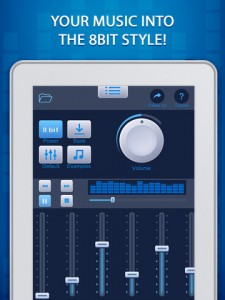
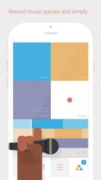

<!DOCTYPE html PUBLIC "-//W3C//DTD XHTML 1.0 Transitional//EN" "http://www.w3.org/TR/xhtml1/DTD/xhtml1-transitional.dtd">
<html xmlns="http://www.w3.org/1999/xhtml" lang="en-US" prefix="og: http://ogp.me/ns#">

 
<!--  --><meta http-equiv="content-type" content="text/html;charset=UTF-8" /><!-- / -->
<head profile="http://gmpg.org/xfn/11">
<meta http-equiv="Content-Type" content="text/html; charset=UTF-8" />
<title>MusicTool  August 2015 - MusicTool</title>
<meta name="generator" content="WordPress 4.9.8" /> <!-- leave this for stats -->

<meta name="keywords" content="" />
<link rel="stylesheet" href="../../wp-content/themes/yestilo/style.css" type="text/css" media="all" />
<link rel="alternate" type="application/rss+xml" title="MusicTool RSS Feed" href="../../feed/index.html" />
<link rel="pingback" href="../../xmlrpc.php" />
<script type="text/javascript" src="../../wp-content/themes/yestilo/js/jquery-1.2.6.min.js"></script>
<script type="text/javascript" src="../../wp-content/themes/yestilo/js/slider.js"></script>
<link rel="stylesheet" type="text/css" href="../../wp-content/themes/yestilo/glide.css" media="screen" />	
<link rel="stylesheet" type="text/css" href="../../wp-content/themes/yestilo/banner.css" media="screen" />	

<script type="text/javascript"><!--//--><![CDATA[//><!--
sfHover = function() {
	if (!document.getElementsByTagName) return false;
	var sfEls = document.getElementById("menu").getElementsByTagName("li");
	var sfEls1 = document.getElementById("catmenu").getElementsByTagName("li");
	for (var i=0; i<sfEls.length; i++) {
		sfEls[i].onmouseover=function() {
			this.className+=" sfhover";
		}
		sfEls[i].onmouseout=function() {
			this.className=this.className.replace(new RegExp(" sfhover\\b"), "");
		}
	}
	for (var i=0; i<sfEls1.length; i++) {
		sfEls1[i].onmouseover=function() {
			this.className+=" sfhover1";
		}
		sfEls1[i].onmouseout=function() {
			this.className=this.className.replace(new RegExp(" sfhover1\\b"), "");
		}
	}
}
if (window.attachEvent) window.attachEvent("onload", sfHover);
//--><!]]></script>

	<link rel='archives' title='July 2018' href='../../2018/07/index.html' />
	<link rel='archives' title='June 2018' href='../../2018/06/index.html' />
	<link rel='archives' title='May 2018' href='../../2018/05/index.html' />
	<link rel='archives' title='April 2018' href='../../2018/04/index.html' />
	<link rel='archives' title='February 2018' href='../../2018/02/index.html' />
	<link rel='archives' title='November 2017' href='../../2017/11/index.html' />
	<link rel='archives' title='October 2017' href='../../2017/10/index.html' />
	<link rel='archives' title='September 2017' href='../../2017/09/index.html' />
	<link rel='archives' title='May 2017' href='../../2017/05/index.html' />
	<link rel='archives' title='March 2017' href='../../2017/03/index.html' />
	<link rel='archives' title='January 2017' href='../../2017/01/index.html' />
	<link rel='archives' title='December 2016' href='../../2016/12/index.html' />
	<link rel='archives' title='November 2016' href='../../2016/11/index.html' />
	<link rel='archives' title='October 2016' href='../../2016/10/index.html' />
	<link rel='archives' title='September 2016' href='../../2016/09/index.html' />
	<link rel='archives' title='August 2016' href='../../2016/08/index.html' />
	<link rel='archives' title='July 2016' href='../../2016/07/index.html' />
	<link rel='archives' title='June 2016' href='../../2016/06/index.html' />
	<link rel='archives' title='May 2016' href='../../2016/05/index.html' />
	<link rel='archives' title='April 2016' href='../../2016/04/index.html' />
	<link rel='archives' title='March 2016' href='../../2016/03/index.html' />
	<link rel='archives' title='February 2016' href='../../2016/02/index.html' />
	<link rel='archives' title='January 2016' href='../../2016/01/index.html' />
	<link rel='archives' title='December 2015' href='../12/index.html' />
	<link rel='archives' title='November 2015' href='../11/index.html' />
	<link rel='archives' title='October 2015' href='../10/index.html' />
	<link rel='archives' title='September 2015' href='../09/index.html' />
	<link rel='archives' title='August 2015' href='index.html' />
	<link rel='archives' title='July 2015' href='../07/index.html' />
	<link rel='archives' title='June 2015' href='../06/index.html' />
	<link rel='archives' title='May 2015' href='../05/index.html' />
	<link rel='archives' title='April 2015' href='../04/index.html' />
	<link rel='archives' title='March 2015' href='../03/index.html' />
	<link rel='archives' title='February 2015' href='../02/index.html' />
	<link rel='archives' title='January 2015' href='../01/index.html' />
	<link rel='archives' title='December 2014' href='../../2014/12/index.html' />
	<link rel='archives' title='November 2014' href='../../2014/11/index.html' />
	<link rel='archives' title='October 2014' href='../../2014/10/index.html' />
	<link rel='archives' title='September 2014' href='../../2014/09/index.html' />
	<link rel='archives' title='August 2014' href='../../2014/08/index.html' />
	<link rel='archives' title='July 2014' href='../../2014/07/index.html' />
	<link rel='archives' title='June 2014' href='../../2014/06/index.html' />
	<link rel='archives' title='May 2014' href='../../2014/05/index.html' />
	<link rel='archives' title='April 2014' href='../../2014/04/index.html' />
	<link rel='archives' title='March 2014' href='../../2014/03/index.html' />
	<link rel='archives' title='February 2014' href='../../2014/02/index.html' />
	<link rel='archives' title='January 2014' href='../../2014/01/index.html' />
	<link rel='archives' title='December 2013' href='../../2013/12/index.html' />
	<link rel='archives' title='November 2013' href='../../2013/11/index.html' />
	<link rel='archives' title='October 2013' href='../../2013/10/index.html' />
	<link rel='archives' title='September 2013' href='../../2013/09/index.html' />
	<link rel='archives' title='August 2013' href='../../2013/08/index.html' />
	<link rel='archives' title='July 2013' href='../../2013/07/index.html' />
	<link rel='archives' title='June 2013' href='../../2013/06/index.html' />
	<link rel='archives' title='May 2013' href='../../2013/05/index.html' />
	<link rel='archives' title='April 2013' href='../../2013/04/index.html' />
	<link rel='archives' title='March 2013' href='../../2013/03/index.html' />
	<link rel='archives' title='February 2013' href='../../2013/02/index.html' />
	<link rel='archives' title='January 2013' href='../../2013/01/index.html' />
	<link rel='archives' title='December 2012' href='../../2012/12/index.html' />
	<link rel='archives' title='November 2012' href='../../2012/11/index.html' />
	<link rel='archives' title='October 2012' href='../../2012/10/index.html' />
	<link rel='archives' title='September 2012' href='../../2012/09/index.html' />
	<link rel='archives' title='August 2012' href='../../2012/08/index.html' />
	<link rel='archives' title='July 2012' href='../../2012/07/index.html' />
	<link rel='archives' title='June 2012' href='../../2012/06/index.html' />
	<link rel='archives' title='May 2012' href='../../2012/05/index.html' />
	<link rel='archives' title='April 2012' href='../../2012/04/index.html' />
	<link rel='archives' title='March 2012' href='../../2012/03/index.html' />
	<link rel='archives' title='February 2012' href='../../2012/02/index.html' />
	<link rel='archives' title='January 2012' href='../../2012/01/index.html' />
	<link rel='archives' title='December 2011' href='../../2011/12/index.html' />
	<link rel='archives' title='November 2011' href='../../2011/11/index.html' />
	<link rel='archives' title='October 2011' href='../../2011/10/index.html' />
	<link rel='archives' title='September 2011' href='../../2011/09/index.html' />
	<link rel='archives' title='August 2011' href='../../2011/08/index.html' />
	<link rel='archives' title='July 2011' href='../../2011/07/index.html' />
	<link rel='archives' title='June 2011' href='../../2011/06/index.html' />
	<link rel='archives' title='May 2011' href='../../2011/05/index.html' />
	<link rel='archives' title='April 2011' href='../../2011/04/index.html' />
	<link rel='archives' title='March 2011' href='../../2011/03/index.html' />
	<link rel='archives' title='February 2011' href='../../2011/02/index.html' />
	<link rel='archives' title='January 2011' href='../../2011/01/index.html' />
	<link rel='archives' title='December 2010' href='../../2010/12/index.html' />
	<link rel='archives' title='November 2010' href='../../2010/11/index.html' />
	<link rel='archives' title='October 2010' href='../../2010/10/index.html' />
	<link rel='archives' title='September 2010' href='../../2010/09/index.html' />
	<link rel='archives' title='August 2010' href='../../2010/08/index.html' />
	<link rel='archives' title='July 2010' href='../../2010/07/index.html' />
	<link rel='archives' title='June 2010' href='../../2010/06/index.html' />
	<link rel='archives' title='May 2010' href='../../2010/05/index.html' />
	<link rel='archives' title='April 2010' href='../../2010/04/index.html' />
	<link rel='archives' title='March 2010' href='../../2010/03/index.html' />
	<link rel='archives' title='February 2010' href='../../2010/02/index.html' />
	<link rel='archives' title='January 2010' href='../../2010/01/index.html' />
	<link rel='archives' title='August 2000' href='../../2000/08/index.html' />

<!-- This site is optimized with the Yoast SEO plugin v5.7.1 - https://yoast.com/wordpress/plugins/seo/ -->
<meta name="robots" content="noindex,follow"/>
<link rel="canonical" href="index.html" />
<link rel="next" href="page/2/index.html" />
<meta property="og:locale" content="en_US" />
<meta property="og:type" content="object" />
<meta property="og:title" content="August 2015 - MusicTool" />
<meta property="og:url" content="https://www.musictool.ml/2015/08/" />
<meta property="og:site_name" content="MusicTool" />
<script type='application/ld+json'>{"@context":"http:\/\/schema.org","@type":"WebSite","@id":"#website","url":"https:\/\/www.musictool.ml\/","name":"MusicTool","potentialAction":{"@type":"SearchAction","target":"https:\/\/www.musictool.ml\/?s={search_term_string}","query-input":"required name=search_term_string"}}</script>
<!-- / Yoast SEO plugin. -->

<link rel='dns-prefetch' href='http://s.w.org/' />
		<script type="text/javascript">
			window._wpemojiSettings = {"baseUrl":"https:\/\/s.w.org\/images\/core\/emoji\/11\/72x72\/","ext":".png","svgUrl":"https:\/\/s.w.org\/images\/core\/emoji\/11\/svg\/","svgExt":".svg","source":{"concatemoji":"https:\/\/www.musictool.ml\/wp-includes\/js\/wp-emoji-release.min.js?ver=4.9.8"}};
			!function(a,b,c){function d(a,b){var c=String.fromCharCode;l.clearRect(0,0,k.width,k.height),l.fillText(c.apply(this,a),0,0);var d=k.toDataURL();l.clearRect(0,0,k.width,k.height),l.fillText(c.apply(this,b),0,0);var e=k.toDataURL();return d===e}function e(a){var b;if(!l||!l.fillText)return!1;switch(l.textBaseline="top",l.font="600 32px Arial",a){case"flag":return!(b=d([55356,56826,55356,56819],[55356,56826,8203,55356,56819]))&&(b=d([55356,57332,56128,56423,56128,56418,56128,56421,56128,56430,56128,56423,56128,56447],[55356,57332,8203,56128,56423,8203,56128,56418,8203,56128,56421,8203,56128,56430,8203,56128,56423,8203,56128,56447]),!b);case"emoji":return b=d([55358,56760,9792,65039],[55358,56760,8203,9792,65039]),!b}return!1}function f(a){var c=b.createElement("script");c.src=a,c.defer=c.type="text/javascript",b.getElementsByTagName("head")[0].appendChild(c)}var g,h,i,j,k=b.createElement("canvas"),l=k.getContext&&k.getContext("2d");for(j=Array("flag","emoji"),c.supports={everything:!0,everythingExceptFlag:!0},i=0;i<j.length;i++)c.supports[j[i]]=e(j[i]),c.supports.everything=c.supports.everything&&c.supports[j[i]],"flag"!==j[i]&&(c.supports.everythingExceptFlag=c.supports.everythingExceptFlag&&c.supports[j[i]]);c.supports.everythingExceptFlag=c.supports.everythingExceptFlag&&!c.supports.flag,c.DOMReady=!1,c.readyCallback=function(){c.DOMReady=!0},c.supports.everything||(h=function(){c.readyCallback()},b.addEventListener?(b.addEventListener("DOMContentLoaded",h,!1),a.addEventListener("load",h,!1)):(a.attachEvent("onload",h),b.attachEvent("onreadystatechange",function(){"complete"===b.readyState&&c.readyCallback()})),g=c.source||{},g.concatemoji?f(g.concatemoji):g.wpemoji&&g.twemoji&&(f(g.twemoji),f(g.wpemoji)))}(window,document,window._wpemojiSettings);
		</script>
		<style type="text/css">
img.wp-smiley,
img.emoji {
	display: inline !important;
	border: none !important;
	box-shadow: none !important;
	height: 1em !important;
	width: 1em !important;
	margin: 0 .07em !important;
	vertical-align: -0.1em !important;
	background: none !important;
	padding: 0 !important;
}
</style>
<link rel='stylesheet' id='dashicons-css'  href='../../wp-includes/css/dashicons.min5010.css?ver=4.9.8' type='text/css' media='all' />
<link rel='stylesheet' id='thickbox-css'  href='../../wp-includes/js/thickbox/thickbox5010.css?ver=4.9.8' type='text/css' media='all' />
<link rel='stylesheet' id='mobiloud-iphone-css'  href='../../wp-content/plugins/mobiloud-mobile-app-plugin/css/iphone5010.css?ver=4.9.8' type='text/css' media='all' />
<link rel='stylesheet' id='wp-pagenavi-css'  href='../../wp-content/plugins/wp-pagenavi/pagenavi-css44fd.css?ver=2.70' type='text/css' media='all' />
<script type='text/javascript' src='../../wp-includes/js/jquery/jqueryb8ff.js?ver=1.12.4'></script>
<script type='text/javascript' src='../../wp-includes/js/jquery/jquery-migrate.min330a.js?ver=1.4.1'></script>
<script type='text/javascript' src='../../wp-content/plugins/google-analyticator/external-tracking.min380f.js?ver=6.5.4'></script>
<link rel='https://api.w.org/' href='../../wp-json/index.html' />
<link rel="EditURI" type="application/rsd+xml" title="RSD" href="../../xmlrpc0db0.php?rsd" />
<link rel="wlwmanifest" type="application/wlwmanifest+xml" href="../../wp-includes/wlwmanifest.xml" /> 
<meta name="generator" content="WordPress 4.9.8" />

<!-- This site is using AdRotate v4.10 to display their advertisements - https://ajdg.solutions/products/adrotate-for-wordpress/ -->
<link href="../../wp-content/plugins/appstore/css/AppStore.css" rel="stylesheet" type="text/css"/><style type='text/css'>.appImageContainer {width: auto;margin: 0px;}</style><style data-context="foundation-flickity-css">/*! Flickity v2.0.2
http://flickity.metafizzy.co
---------------------------------------------- */.flickity-enabled{position:relative}.flickity-enabled:focus{outline:0}.flickity-viewport{overflow:hidden;position:relative;height:100%}.flickity-slider{position:absolute;width:100%;height:100%}.flickity-enabled.is-draggable{-webkit-tap-highlight-color:transparent;tap-highlight-color:transparent;-webkit-user-select:none;-moz-user-select:none;-ms-user-select:none;user-select:none}.flickity-enabled.is-draggable .flickity-viewport{cursor:move;cursor:-webkit-grab;cursor:grab}.flickity-enabled.is-draggable .flickity-viewport.is-pointer-down{cursor:-webkit-grabbing;cursor:grabbing}.flickity-prev-next-button{position:absolute;top:50%;width:44px;height:44px;border:none;border-radius:50%;background:#fff;background:hsla(0,0%,100%,.75);cursor:pointer;-webkit-transform:translateY(-50%);transform:translateY(-50%)}.flickity-prev-next-button:hover{background:#fff}.flickity-prev-next-button:focus{outline:0;box-shadow:0 0 0 5px #09F}.flickity-prev-next-button:active{opacity:.6}.flickity-prev-next-button.previous{left:10px}.flickity-prev-next-button.next{right:10px}.flickity-rtl .flickity-prev-next-button.previous{left:auto;right:10px}.flickity-rtl .flickity-prev-next-button.next{right:auto;left:10px}.flickity-prev-next-button:disabled{opacity:.3;cursor:auto}.flickity-prev-next-button svg{position:absolute;left:20%;top:20%;width:60%;height:60%}.flickity-prev-next-button .arrow{fill:#333}.flickity-page-dots{position:absolute;width:100%;bottom:-25px;padding:0;margin:0;list-style:none;text-align:center;line-height:1}.flickity-rtl .flickity-page-dots{direction:rtl}.flickity-page-dots .dot{display:inline-block;width:10px;height:10px;margin:0 8px;background:#333;border-radius:50%;opacity:.25;cursor:pointer}.flickity-page-dots .dot.is-selected{opacity:1}</style><style data-context="foundation-slideout-css">.slideout-menu{position:fixed;left:0;top:0;bottom:0;right:auto;z-index:0;width:256px;overflow-y:auto;-webkit-overflow-scrolling:touch;display:none}.slideout-menu.pushit-right{left:auto;right:0}.slideout-panel{position:relative;z-index:1;will-change:transform}.slideout-open,.slideout-open .slideout-panel,.slideout-open body{overflow:hidden}.slideout-open .slideout-menu{display:block}.pushit{display:none}</style>		<style type="text/css">
		.better-tag-cloud-shortcode li,
		.better-tag-cloud-shortcode li a,
		li#better-tag-cloud ul.wp-tag-cloud li,
		li#better-tag-cloud ul.wp-tag-cloud li a {
			display:	inline;
					}
		</style> <!-- Google Analytics Tracking by Google Analyticator 6.5.4: http://www.videousermanuals.com/google-analyticator/ -->
<script type="text/javascript">
    var analyticsFileTypes = [''];
    var analyticsSnippet = 'enabled';
    var analyticsEventTracking = 'enabled';
</script>
<script type="text/javascript">
	var _gaq = _gaq || [];
  
	_gaq.push(['_setAccount', 'UA-124581973-2']);
    _gaq.push(['_addDevId', 'i9k95']); // Google Analyticator App ID with Google
	_gaq.push(['_trackPageview']);

	(function() {
		var ga = document.createElement('script'); ga.type = 'text/javascript'; ga.async = true;
		                ga.src = ('https:' == document.location.protocol ? 'https://ssl' : 'http://www') + '.google-analytics.com/ga.js';
		                var s = document.getElementsByTagName('script')[0]; s.parentNode.insertBefore(ga, s);
	})();
</script>
<style>.ios7.web-app-mode.has-fixed header{ background-color: rgba(3,122,221,.88);}</style>
<script type="text/javascript">

  var _gaq = _gaq || [];
  _gaq.push(['_setAccount', 'UA-124581973-2']);
  _gaq.push(['_trackPageview']);

  (function() {
    var ga = document.createElement('script'); ga.type = 'text/javascript'; ga.async = true;
    ga.src = ('https:' == document.location.protocol ? 'https://ssl' : 'http://www') + '.google-analytics.com/ga.js';
    var s = document.getElementsByTagName('script')[0]; s.parentNode.insertBefore(ga, s);
  })();

</script>

<!-- Quantcast Tag -->
<script type="text/javascript">
var _qevents = _qevents || [];

(function() {
var elem = document.createElement('script');
elem.src = (document.location.protocol == "https:" ? "https://secure" : "http://edge") + ".quantserve.com/quant.js";
elem.async = true;
elem.type = "text/javascript";
var scpt = document.getElementsByTagName('script')[0];
scpt.parentNode.insertBefore(elem, scpt);
})();

_qevents.push({
qacct:"p-4bNPIxg_z12V2"
});
</script>

<noscript>
<div style="display:none;">

</div>
</noscript>
<!-- End Quantcast tag -->

</head>

<body>

<div id="wrapper">


<div id="top"> 
<!-- Error, Ad is not available at this time due to schedule/geolocation restrictions! --><div class="blogname">
	<h1><a href="../../index.html" title="MusicTool">MusicTool</a></h1>
	
<h2></h2></h1>

</div>

</div>

<div id="foxmenucontainer">
	<div id="menu">
		<ul>
			<li><a href="../../index.html">Home</a></li>
			<li class="page_item page-item-2"><a href="../../about/index.html">About</a></li>

<li class="page_item page-item-171"><a href="../../advertising/index.html">Advertising</a></li>

<
		
		</ul>
	</div>		
</div>
<div class="clear"></div>
<div id="catmenucontainer">
	<div id="catmenu">
			<ul>
					<li class="cat-item cat-item-3"><a href="../../category/featured/index.html" >Featured</a>
</li>
	<li class="cat-item cat-item-26"><a href="../../category/hardware/index.html" >Hardware</a>
</li>
	<li class="cat-item cat-item-174"><a href="../../category/interviews/index.html" >Interviews</a>
</li>
	<li class="cat-item cat-item-85"><a href="../../category/ipad/index.html" >iPad</a>
</li>
	<li class="cat-item cat-item-5"><a href="../../category/music-apps/index.html" >Music Apps</a>
<ul class='children'>
	<li class="cat-item cat-item-50"><a href="../../category/music-apps/audio-processing/index.html" >Audio Processing</a>
</li>
	<li class="cat-item cat-item-137"><a href="../../category/music-apps/controllers/index.html" >Controllers</a>
</li>
	<li class="cat-item cat-item-173"><a href="../../category/music-apps/djing/index.html" >DJing</a>
</li>
	<li class="cat-item cat-item-7"><a href="../../category/music-apps/drums/index.html" >Drums</a>
</li>
	<li class="cat-item cat-item-8"><a href="../../category/music-apps/guitars/index.html" >Guitars</a>
</li>
	<li class="cat-item cat-item-35"><a href="../../category/music-apps/loops-music-apps/index.html" >Loops</a>
</li>
	<li class="cat-item cat-item-89"><a href="../../category/music-apps/midi-music-apps/index.html" >MIDI</a>
</li>
	<li class="cat-item cat-item-70"><a href="../../category/music-apps/mixing/index.html" >Mixing</a>
</li>
	<li class="cat-item cat-item-9"><a href="../../category/music-apps/recording/index.html" >Recording</a>
</li>
	<li class="cat-item cat-item-72"><a href="../../category/music-apps/sampler-music-apps/index.html" >Sampler</a>
</li>
	<li class="cat-item cat-item-37"><a href="../../category/music-apps/sequencers/index.html" >Sequencers</a>
</li>
	<li class="cat-item cat-item-6"><a href="../../category/music-apps/synths/index.html" >Synths</a>
</li>
	<li class="cat-item cat-item-49"><a href="../../category/music-apps/vocals/index.html" >Vocals</a>
</li>
</ul>
</li>
	<li class="cat-item cat-item-4"><a href="../../category/news/index.html" >News</a>
</li>
	<li class="cat-item cat-item-167"><a href="../../category/reviews/index.html" >Reviews</a>
</li>
	<li class="cat-item cat-item-11"><a href="../../category/videos/index.html" >Videos</a>
</li>
			</ul>
	</div>		
</div>
<div class="clear"></div>
<div id="casing">		
<div id="content">


		<div class="single" id="post-8340">
<div class="title">

<h2><a href="../../emo-chorus/index.html" rel="bookmark" title="Permanent Link to Emo Chorus">Emo Chorus</a></h2>
<div class="date"><span class="author">Posted by Mikers</span> <span class="clock"> On August - 28 - 2015</span> <span class="comm"> <a href="../../emo-chorus/index.html#respond">ADD COMMENTS</a></span></div>	
</div>

<div class="cover">
<div class="entry">

					<blockquote><p><a href="../../wp-content/uploads/2015/08/screen480x480-11.jpg"></a>Realistic Choir simulator ranging from simple Chorus emulation to full ensemble Choir with 128 members.</p>
<p>Emo Chorus is a modulation effect used used to create a richer, thicker sound and add subtle movement. The effect roughly simulates the slight variations in pitch and timing that occur when multiple performers sing or play the same part.In contrast to most traditional chorus effect units Emo Chorus allows for astonishingly realistic big choirs with up to 128 voices !</p>
<p>Use live input from any source &#8211; Microphone, Guitar, Audiobus and Inter App Audio &#8211; or take a song from your iTunes library for processing.</p>
<p>Features:</p>
<p>• 128 voices chorus engine<br />
• 20 factory chorus and flanger presets<br />
• Unlimited user presets.<br />
• Delay time up to 180ms.<br />
• MIDI controllable parameter.<br />
• Audiobus 2 compatible with state saving<br />
• IAA compatible ( Auria, Cubasis, Garageband ).<br />
• Integrated iTunes player.</p>
<p style="text-align: center;"><iframe class='youtube-player youtuber' type='text/html' width='425' height='355' src='http://www.youtube.com/embed/_C6u8RQmQu4?rel=0&amp;fs=1' webkitAllowFullScreen mozallowfullscreen allowFullScreen frameborder='0'></iframe></p>
</blockquote>
<p style="text-align: left;">[appext 1031178668]</p>
<p>&nbsp;</p>
				<div class="clear"></div>
</div>

</div>

<div class="singleinfo">
					<div class="category"><a href="../../category/music-apps/audio-processing/index.html" rel="category tag">Audio Processing</a> <a href="../../category/music-apps/vocals/index.html" rel="category tag">Vocals</a> </div>
				
</div>


</div>
		<div class="single" id="post-8336">
<div class="title">

<h2><a href="../../itonto/index.html" rel="bookmark" title="Permanent Link to iTonto">iTonto</a></h2>
<div class="date"><span class="author">Posted by Mikers</span> <span class="clock"> On August - 28 - 2015</span> <span class="comm"> <a href="../../itonto/index.html#respond">ADD COMMENTS</a></span></div>	
</div>

<div class="cover">
<div class="entry">

					<p>Not exactly something you can make sounds with, but still a cool look inside a vintage synth!</p>
<blockquote><p><a href="../../wp-content/uploads/2015/08/screen480x480-10.jpg"></a>iTONTO the App, documents the Engineering and Design of “TONTO”, The Original New Timbral Orchestra.</p>
<p>DISCLAIMER: iTONTO is not a functional iOS recreation of TONTO.</p>
<p>TONTO is one of the most important innovations in musical history. TONTO is the first synthesizer of popular music and is displayed and described in great detail within the App. This historic instrument, the invention of Grammy winning Malcolm Cecil, helped influence American cultural and musical history and is one of the most recorded instruments of all time.<br />
The App includes detailed photos of the front and back of each panel with drill down and zoom capabilities, circuitry and schematics, personal comments, hand drawn notes in design, and stories about TONTOS history. Collaborations include Steve Wonder, Billy Preston, Gil Scott Heron, Little Feet, Doobie Brothers, George Harrison and The Isley Brothers. TONTO is on over 160 albums including 2 of Rolling Stone’s top 100 best selling albums of all time.</p>
<p>TONTO – The Original New Timbral Orchestra uses the principle of analog subtractive synthesis to create multi-timbral polyphonic sounds.The heart of a subtractive synthesizer is its filter. TONTO has a compliment of fourteen filters: two full MOOG 904 band-pass filters,<br />
two Arp Low Pass filters,<br />
four Oberhiem SEM filters;<br />
two Cecil/Serge dual filters;<br />
one ARP 1040 multi function filter<br />
and one Cecil Custom low pass filter.<br />
It also has 39 oscillators; 22 envelope generators;<br />
18 VCA’s and many more modules,<br />
including processors, sequencers and controllers which can be patched to create at least fourteen discrete “voices” – each with it’s own unique timbral quality and all of which are able to be controlled simultaneously. As its name implies, it is truly an integrated orchestra of new timbres.<br />
Optimized for iPhone 6, IOS 8.0 or better.</p></blockquote>
[appext 1028230661]
				<div class="clear"></div>
</div>

</div>

<div class="singleinfo">
					<div class="category"><a href="../../category/news/index.html" rel="category tag">News</a> </div>
				
</div>


</div>
		<div class="single" id="post-8333">
<div class="title">

<h2><a href="../../harmonics-wheel/index.html" rel="bookmark" title="Permanent Link to Harmonics Wheel">Harmonics Wheel</a></h2>
<div class="date"><span class="author">Posted by Mikers</span> <span class="clock"> On August - 28 - 2015</span> <span class="comm"> <a href="../../harmonics-wheel/index.html#respond">ADD COMMENTS</a></span></div>	
</div>

<div class="cover">
<div class="entry">

					<blockquote><p><a href="../../wp-content/uploads/2015/08/screen640x640.jpg"></a>Harmonics Wheel is a complete music theory system as well as being a playable instrument laid out in a logical and easy to play format. It’s based on the harmonic and sub harmonic series, which are the basis of all music. It is a powerful tool for learning the basic relationships between harmonics, roots, chords, scales and the cycle of 4ths and 5ths.</p>
<p>Harmony can be viewed in several ways. Many musicians favor the chord progression method where each harmony within a song is represented by a chord symbol. While this method works it has a major drawback in that it does not show the key modulations of the music. Chords can change as often as every beat but the keys that the music modulates through move much more slowly and can cover several measures. Harmonics Wheel utilizes the “key” approach, which makes improvising much easier.</p>
<p>A common chord substitution method in jazz is to modulate to the complimentary key a flattened fifth away from the main key at will. Harmonics Wheel makes this easy by having both the Main Key and the Complimentary Key available at all times on separate “playbars” that are mirror images of each other. Utilizing the “Harmonics Wheel Pie” key changes can be effected instantaneously while simultaneously playing the “playbars”.</p>
<p>With very little practice one can become adept at playing the “playbars” and “harmonics wheel pie” producing exciting and complex harmonic and melodic structures that would take many years of practice and theory training to accomplish on a traditional keyboard or fretboard.</p>
<p>The record function in “Harmonics Wheel” enables users to keep their compositions and play them back in any order at will instantaneously.</p>
<p>“Harmonics Wheel” includes a Drum Machine and a “Randomizer” that greatly enhance the users compositions and add to the enjoyment and learning capabilities of the app.<br />
&#8211; 12 Instruments &#8212; Piano, Vibes, Acoustic Guitar, Rhodes, Piano/Strings, Buzz Synth, Bell/Strings, Guitar/Strings, Orchestron, Clavisk, Resoslide, and Harp<br />
&#8211; Record, Save, and Play Back (on the fly)<br />
&#8211; Randomizer<br />
&#8211; Key Selector Wheel<br />
&#8211; Playbar, root key on the right and alternative flattened fifth scale on the left<br />
&#8211; Drum Machine<br />
&#8211; Soft Sync<br />
&#8211; Playback over recording<br />
&#8211; Playback Key Selector (on the fly)<br />
&#8211; Playback Instrument Selector (on the fly)<br />
&#8211; Independent LivePlay Keys Selector<br />
&#8211; Independent LivePlay Instrument Selector<br />
&#8211; Title Bar Toggle for Harmonics Display<br />
&#8211; Current and Alternative Keys Display<br />
&#8211; Individual Note Labels for all Keys<br />
&#8211; Lots of Help Files<br />
&#8211; Octave Selector for LivePlay<br />
&#8211; 4 Individual Odd and Even Harmonics Mute Buttons as wll as a Main Mute All Button</p></blockquote>
[appext 1027251944]
				<div class="clear"></div>
</div>

</div>

<div class="singleinfo">
					<div class="category"><a href="../../category/music-apps/audio-processing/index.html" rel="category tag">Audio Processing</a> </div>
				
</div>


</div>
		<div class="single" id="post-8324">
<div class="title">

<h2><a href="../../bias-fx-gets-new-studio-racks-pack/index.html" rel="bookmark" title="Permanent Link to BIAS FX gets New Studio Racks Pack">BIAS FX gets New Studio Racks Pack</a></h2>
<div class="date"><span class="author">Posted by Mikers</span> <span class="clock"> On August - 25 - 2015</span> <span class="comm"> <a href="../../bias-fx-gets-new-studio-racks-pack/index.html#respond">ADD COMMENTS</a></span></div>	
</div>

<div class="cover">
<div class="entry">

					<blockquote><p><a href="../../wp-content/uploads/2015/08/2015-08-19-23.47.32.png"></a>Positive Grid (<a href="http://www.positivegrid.com/" target="_blank">www.positivegrid.com</a>), today announced the new Studio Racks Pack for the already popular BIAS FX iPad amp-and-effects processor. Now BIAS FX iPad users will find five of the most sought-after studio racks including new professional modules based on the LA2A® Compressor, PSA-1® Preamp, Manley® EQ, Echoplex® and Dual Spring Reverb. The new racks can be integrated with BIAS Amp models, run into two different signal chains, and share and download on ToneCloud, Positive Grid’s tone sharing platform. The new BIAS FX Studio Racks Pack is available now as in-app purchase.</p>
<p><b>Professional Boutique Compression</b></p>
<p>The new effect racks in <strong>BIAS FX</strong> includes a professional studio compressor based on the  Teletronix® LA-2A® studio compressor. It&#8217;s considered one of the finest compressors in many circles and it provides warmth and transparent all tube circuit compressor effect. It&#8217;s great to use as preamp module to drive more gain, or as a rack unit for tube compression.</p>
<p><b>Studio-Ready Preamp and EQ</b></p>
<p>The Studio Rack Pack also includes a drive preamp based on the Sansamp® PSA-1 preamp, this rack provides a full range of control parameters for your drive channel, you can dial in from a mellow blues lead to a punchy hard rock power chord. We also included a studio EQ based on the Manley® Massive Passive EQ, this boutique studio EQ contains 2 adjustable individual channel and each has 3 band EQ to shape the tone.</p>
<p><b>Powerful Delay And Reverb Racks</b></p>
<p>BIAS FX iPad users can now find the classic delay echoplex based on the famous Echoplex® tape delay unit, first made in 1959. the Echoplex set a standard for the effect in the 1960s—it is still regarded as &#8220;the standard by which everything else is measured.&#8221; Also included is an analog sounding dual spring reverb, based on the RCM-2R® Dual Spring Tube Reverb. It uses 2 tube simulated channel to provide warmth and wide range of analog spring reverb, adding much juice to your tone and make it swirl and rich.</p>
<p style="text-align: center;"><iframe class='youtube-player youtuber' type='text/html' width='425' height='355' src='http://www.youtube.com/embed/0O9baMeSD1A?rel=0&amp;fs=1' webkitAllowFullScreen mozallowfullscreen allowFullScreen frameborder='0'></iframe></p>
<p style="text-align: center;">For more details click here &#8211; <a href="http://www.positivegrid.com/2015/08/introducing-new-studio-racks-pack/" target="_blank">http://www.positivegrid.com/2015/08/introducing-new-studio-racks-pack/</a></p>
</blockquote>
<p style="text-align: left;">[appext 937685528]</p>
<p style="text-align: left;">
				<div class="clear"></div>
</div>

</div>

<div class="singleinfo">
					<div class="category"><a href="../../category/music-apps/guitars/index.html" rel="category tag">Guitars</a> </div>
				
</div>


</div>
		<div class="single" id="post-8320">
<div class="title">

<h2><a href="../../megapad/index.html" rel="bookmark" title="Permanent Link to MegaPad">MegaPad</a></h2>
<div class="date"><span class="author">Posted by Mikers</span> <span class="clock"> On August - 25 - 2015</span> <span class="comm"> <a href="../../megapad/index.html#respond">ADD COMMENTS</a></span></div>	
</div>

<div class="cover">
<div class="entry">

					<blockquote><p><a href="../../wp-content/uploads/2015/08/screen480x480-9.jpg"></a>Build beats faster with MegaPad! Record loops while you just keep stacking epic beats, synths and samples into your track. Tap play to keep listening without recording.</p>
<p>Features:<br />
&#8211; 64 Pads<br />
&#8211; 64 Mixer channels to adjust volume of each pad<br />
&#8211; Export Options like YouTube uploading, Email, Facebook, text your beats and more!<br />
&#8211; Unlimited songs<br />
&#8211; An awesome built-in demo to show you a beginner look at what is possible</p>
<p>Get more details here &#8211; <a href="http://www.xmeinc.com/new/index.html" target="_blank">http://www.xmeinc.com/new/index.html</a></p></blockquote>
[appext 1028692658]
				<div class="clear"></div>
</div>

</div>

<div class="singleinfo">
					<div class="category"><a href="../../category/music-apps/controllers/index.html" rel="category tag">Controllers</a> <a href="../../category/music-apps/drums/index.html" rel="category tag">Drums</a> <a href="../../category/music-apps/sequencers/index.html" rel="category tag">Sequencers</a> <a href="../../category/music-apps/synths/index.html" rel="category tag">Synths</a> </div>
				
</div>


</div>
		<div class="single" id="post-8317">
<div class="title">

<h2><a href="../../melodyminer/index.html" rel="bookmark" title="Permanent Link to MelodyMiner">MelodyMiner</a></h2>
<div class="date"><span class="author">Posted by Mikers</span> <span class="clock"> On August - 25 - 2015</span> <span class="comm"> <a href="../../melodyminer/index.html#respond">ADD COMMENTS</a></span></div>	
</div>

<div class="cover">
<div class="entry">

					<blockquote><p><a href="../../wp-content/uploads/2015/08/screen480x480-8.jpg"></a>Got a song idea off hand? Bring it to life within seconds. Simply sing out your original melody and Melody Miner will generate various songs with unlimited sets of chord progression in different tempos. In each generated song, your voice will automatically be tuned to match the chords and instruments will play along.</p>
<p>* Easy To Use<br />
&#8211; Open up the app, choose a tempo, and start recording.<br />
&#8211; Play and navigate through generated songs with varied chord progressions, tempos, and settings.</p>
<p>* Editable Chord Progression and Tempo<br />
&#8211; Pick a chord of your choice at any position. Almost all types of chords used in popular music are available.<br />
&#8211; Allowed to change tempo after recording.</p>
<p>* Vocal Tuning Options<br />
&#8211; Change the level of vocal tuning from Off to High.<br />
&#8211; Enable or disable harmony effect.<br />
&#8211; Allowed to increase overall pitch of vocal up to 12 semitones (1 octave)</p>
<p>* Backing Instruments<br />
&#8211; Choose any combination of piano, guitar, and drums with bass.<br />
&#8211; Four different basic patterns are selectable for piano and guitar.</p>
<p>* Share<br />
&#8211; Share vocal track as MP3, AIFF, or MIDI file.<br />
&#8211; Share via Email, AudioCopy, or other installed apps that support specified file format.</p>
<p>Are you a seasoned musician or a songwriter?<br />
Then, Melody Miner will greatly assist you in all aspects while you are in an idea-developing phase. Besides ease of song-prototyping, it will even bring you new inspiration by generated songs.<br />
Transfer output vocal as a MIDI or an audio file and continue working on your masterpiece on other applications seamlessly.</p>
<p>If you are new to songwriting, have some fun of making your own songs.<br />
Find yourself being creative in music-making even if you haven&#8217;t ever played a note on guitar or piano.</p>
<p>For more details &#8211; <a href="http://www.melodyminer.co/" target="_blank">http://www.melodyminer.co/</a></p></blockquote>
[appext 1030667318]
				<div class="clear"></div>
</div>

</div>

<div class="singleinfo">
					<div class="category"><a href="../../category/music-apps/audio-processing/index.html" rel="category tag">Audio Processing</a> </div>
				
</div>


</div>
		<div class="single" id="post-8313">
<div class="title">

<h2><a href="../../mksensation/index.html" rel="bookmark" title="Permanent Link to MKSensation">MKSensation</a></h2>
<div class="date"><span class="author">Posted by Mikers</span> <span class="clock"> On August - 25 - 2015</span> <span class="comm"> <a href="../../mksensation/index.html#respond">ADD COMMENTS</a></span></div>	
</div>

<div class="cover">
<div class="entry">

					<blockquote><p><a href="../../wp-content/uploads/2015/08/screen480x480-7.jpg"></a>The MKSensation is a player&#8217;s live gigging module designed to give you the bread and butter sounds needed for a live session, gig, church service, or studio session. The layout, ease of use, sliders, and simple functionality is what has made our PC version so successful. There is no fancy splash page and it&#8217;s not rattled with hundreds of sounds. It&#8217;s designed to be loaded and played for instant layering and inspiration. You could could call this your instant rompler full of the sounds you would use all of the time and given our reputation of sampling, you know the sounds will be very warm, thick, and realistic. You won&#8217;t even believe that these sounds are coming from your iPad!</p>
<p>History:<br />
Our roots stem from being gospel musicians. In the good ol&#8217; days we would have our multi-tier stack of keyboards and modules all layered together with a very intricate MIDI routing setup with all of or presets ready for live worship. Our setup would consist of a warm acoustic piano; a CP80 type of semi-realistic piano; lush strings; warm pad with filter cutoff; a very expressive tine; phat synth brass; a nice buzz saw; and a good ol&#8217; real brass sound. Between these few staple sounds, we were ready for any gig, service, studio session, or performance. Think about it&#8230;.When you go to the music store to try out a new synth, what do you end up playing the most&#8230;? You play the pianos, keys, strings, horns, and synth sounds. That&#8217;s what this module is all about. You can layer as many sounds as CPU permits, for instant inspiration on your iPad.</p>
<p>Sounds Available:<br />
1. Piano 1 &#8211; MKS Piano 1<br />
2. Piano 2 &#8211; MKS Piano 2<br />
3. EP 1 &#8211; MKS EP 1 with and without chorus (Sampled using the original chorus)<br />
4. EP 2 &#8211; MKS EP 2 with and without chorus (Sampled using the original chorus)<br />
5. Power Grand &#8211; Classic gospel grand piano<br />
6. Acoustic Grand &#8211; Warm acoustic grand<br />
7. Dyno &#8211; 80s type electric dyno<br />
8. FM Tine &#8211; DX FM electric EP<br />
9. Brass &#8211; Warm Brass Section with Mod Wheel LFO<br />
10. Synth &#8211; Poly Synth with Mod Wheel LFO<br />
11. Strings &#8211; Warm cinematic strings<br />
12. Pad &#8211; Warm pad</p>
<p>(Note: 4 patches included free, the rest are IAP)</p>
<p style="text-align: center;"><iframe class='youtube-player youtuber' type='text/html' width='425' height='355' src='http://www.youtube.com/embed/jVKnZd8kFzQ?rel=0&amp;fs=1' webkitAllowFullScreen mozallowfullscreen allowFullScreen frameborder='0'></iframe></p>
</blockquote>
[appext 996418917]
				<div class="clear"></div>
</div>

</div>

<div class="singleinfo">
					<div class="category"><a href="../../category/music-apps/synths/index.html" rel="category tag">Synths</a> </div>
				
</div>


</div>
		<div class="single" id="post-8310">
<div class="title">

<h2><a href="../../volca-sample-controller/index.html" rel="bookmark" title="Permanent Link to Volca Sample Controller">Volca Sample Controller</a></h2>
<div class="date"><span class="author">Posted by Mikers</span> <span class="clock"> On August - 22 - 2015</span> <span class="comm"> <a href="../../volca-sample-controller/index.html#respond">ADD COMMENTS</a></span></div>	
</div>

<div class="cover">
<div class="entry">

					<blockquote><p><a href="../../wp-content/uploads/2015/08/screen480x480-6.jpg"></a>This app send all volca sample available MIDI CC and note on/off command from your iOS devices. The CC commands are send real time to the volca as you adjust on your iPhone or iPad. The Copy and Paste makes it easy to build the parts. Each part remembers the 12 parameter settings. The app has an octave from 3 to 5.</p>
<p>Hardware requirements:<br />
&#8211; iPhone 5 and above<br />
&#8211; a Lightning to USB Camera Adapter from Apple<br />
&#8211; a USB to MIDI cable ($10 at amazon or your local IT shop)</p>
<p>Specification:<br />
&#8211; At least 3 Octave of notes<br />
&#8211; Automatic remember 10 parts of settings<br />
&#8211; 12 MIDI knob settings<br />
&#8211; Copy and Paste for the parts<br />
&#8211; Similar layout design to Korg Volca Sample</p>
<p>MIDI Command<br />
&#8211; Note On/Off for 3 Octave at default note value C4<br />
&#8211; Sample Start Point for 0 to127 at default value 0<br />
&#8211; Sample Length for 0 to 127 at default value 127<br />
&#8211; Sample Hi Cut for 0 to 127 at default value 64<br />
&#8211; Pitch Speed for -63 to 63 at default value 0<br />
&#8211; Pitch EG Int for -63 to 63 at default value 0<br />
&#8211; Pitch Attack for 0 to 127 at default value 0<br />
&#8211; Pitch Decay for 0 to 127 at default value 64<br />
&#8211; Amp Level for 0 to 127 at default value 127<br />
&#8211; Amp Pan -63(L) to 63(R) at default value 0<br />
&#8211; Amp Attack for 0 to 127 at default value 0<br />
&#8211; Amp Decay for 0 to 127 at default value 64</p></blockquote>
[app 1029973310]
				<div class="clear"></div>
</div>

</div>

<div class="singleinfo">
					<div class="category"><a href="../../category/music-apps/midi-music-apps/index.html" rel="category tag">MIDI</a> </div>
				
</div>


</div>
		<div class="single" id="post-8306">
<div class="title">

<h2><a href="../../iretro-music-converter-pro/index.html" rel="bookmark" title="Permanent Link to iRetro Music Converter PRO">iRetro Music Converter PRO</a></h2>
<div class="date"><span class="author">Posted by Mikers</span> <span class="clock"> On August - 22 - 2015</span> <span class="comm"> <a href="../../iretro-music-converter-pro/index.html#respond">ADD COMMENTS</a></span></div>	
</div>

<div class="cover">
<div class="entry">

					<blockquote><p><a href="../../wp-content/uploads/2015/08/screen480x480-51.jpg"></a>FULL VERSION, WITHOUT ADS!<br />
Musical back in time! iRetro Music Converter for all fans of true old school 8bit music. Any song in seconds will turn into real retro hit! Without difficult settings and sound adjustment. Tap one button and your brand new 8bit music style track is ready!</p>
<p>HOW TO USE: Choose one of the examples that already prepared for convertation or upload songs from your iTunes music library. When you’ll be ready, press “8 bit” button and a track will convert automatically. Adjust equalizer settings in a free way or make it default by “Def” button. Swipe big slider to control volume of the whole track.</p>
<p>iRetro Music Converter features:<br />
&#8211; Instant music converter<br />
&#8211; HQ 8bit style filter<br />
&#8211; Perfect music examples to convert<br />
&#8211; Simple equalizer<br />
&#8211; Volume settings</p>
<p>Your search for really good 8bit music app of soft is done. iRetro Music Converter: one button &#8211; new hit!</p></blockquote>
[appext 1016397422]
				<div class="clear"></div>
</div>

</div>

<div class="singleinfo">
					<div class="category"><a href="../../category/music-apps/audio-processing/index.html" rel="category tag">Audio Processing</a> </div>
				
</div>


</div>
		<div class="single" id="post-8303">
<div class="title">

<h2><a href="../../trackd/index.html" rel="bookmark" title="Permanent Link to Trackd">Trackd</a></h2>
<div class="date"><span class="author">Posted by Mikers</span> <span class="clock"> On August - 22 - 2015</span> <span class="comm"> <a href="../../trackd/index.html#respond">ADD COMMENTS</a></span></div>	
</div>

<div class="cover">
<div class="entry">

					<blockquote><p><a href="../../wp-content/uploads/2015/08/screen322x572.jpg"></a>Trackd is the tool songwriters, musicians and creators have been waiting for! Record songs and demos with ease, and get your bandmates, friends and co-creators collaborating within seconds to build brilliant jams. Time to put the voicenotes away for good and get creating with Trackd!</p>
<p>Recording with Trackd is extremely simple and within minutes your ideas become songs. Mix and pan your recordings, then share them to Facebook, dropbox, email or even your camera roll and get them out there!</p>
<p>Create a profile in Trackd and post your recordings to show off your skills and open yourself up to a world of collaboration. Search for new musicians to create with through instrument tags, and become discoverable yourself as your song library grows. Connect Facebook or Twitter to instantly add all of your friends using Trackd to your list of potential collaborators.</p>
<p>With Trackd in your pocket you&#8217;ll never let a song idea get away, or be without your bandmates and co-writers ever again!</p>
<p>KEY FEATURES</p>
<p>• Record from your iPhone with up to 8 tracks<br />
• Mix and pan your recordings with ease<br />
• Play, scrub and delete your recordings<br />
• Create as many new projects as your iPhone will hold &#8211; for free<br />
• Invite your friends to add parts with a couple of taps<br />
• Create an online profile to show off your talents and genres<br />
• Discover and connect with artists, musicians and songwriters all over the world<br />
• Collaborations are totally private and under your control at all times<br />
• Share your songs with the world through your Track profile, Facebook, email and more<br />
• Dropbox export your complete songs<br />
• Name, tag and add meta-data to your songs<br />
• Stick to the beat with a built-in metronome<br />
• Attach lyrics to your songs and keep them private or share with your collaborators</p>
<p>For more details &#8211; <a href="http://trackdmusic.com/" target="_blank">http://trackdmusic.com/</a></p></blockquote>
[appext 978196692]
				<div class="clear"></div>
</div>

</div>

<div class="singleinfo">
					<div class="category"><a href="../../category/music-apps/recording/index.html" rel="category tag">Recording</a> <a href="../../category/music-apps/vocals/index.html" rel="category tag">Vocals</a> </div>
				
</div>


</div>
		
 <div id="navigation">
		<div class='wp-pagenavi'>
<span class='pages'>Page 1 of 2</span><span class='current'>1</span><a class="page larger" title="Page 2" href="page/2/index.html">2</a><a class="nextpostslink" rel="next" href="page/2/index.html">&raquo;</a>
</div>  
</div>

	
</div>
<div id="rightcol">

<div class="videopost">


				   				   				   				   				   				   <a href="../../advertising/index.html">
</a> 

</div>


<div class="clear"> </div>


<div class="banner">

<ul>

<li>
<a href="https://www.positivegrid.com/" rel="bookmark" title=""></a>
</li>	

<li>
<a href="http://www.auriaapp.com/" rel="bookmark" title=""></a>
</li>

<li>
<a href="../../advertising/index.html" rel="bookmark" title=""></a>
</li>


<li>
<a href="../../advertising/index.html" rel="bookmark" title=""></a>
</li>


<li>
<a href="../../advertising/index.html" rel="bookmark" title=""></a>
</li>


<li>
<a href="../../advertising/index.html" rel="bookmark" title=""></a>
</li>


</ul>
</div>
	
<div id="sidebar">
<div class="sidebar1">
	
	<ul>
	<li id="text-3" class="widget widget_text"><h2 class="widgettitle">Hi There!&#8230;.</h2>
			<div class="textwidget"><p>Thanks for dropping by musictool. Whether you're a dedicated app developer, or devoted app users like us, we hope you find what you're after. Ping us via the Contact Page if you want to touch base.</p>
</div>
		</li>
<li id="categories-3" class="widget widget_categories"><h2 class="widgettitle">categories</h2>
		<ul>
	<li class="cat-item cat-item-50"><a href="../../category/music-apps/audio-processing/index.html" >Audio Processing</a>
</li>
	<li class="cat-item cat-item-137"><a href="../../category/music-apps/controllers/index.html" >Controllers</a>
</li>
	<li class="cat-item cat-item-173"><a href="../../category/music-apps/djing/index.html" >DJing</a>
</li>
	<li class="cat-item cat-item-7"><a href="../../category/music-apps/drums/index.html" >Drums</a>
</li>
	<li class="cat-item cat-item-3"><a href="../../category/featured/index.html" >Featured</a>
</li>
	<li class="cat-item cat-item-8"><a href="../../category/music-apps/guitars/index.html" >Guitars</a>
</li>
	<li class="cat-item cat-item-26"><a href="../../category/hardware/index.html" >Hardware</a>
</li>
	<li class="cat-item cat-item-174"><a href="../../category/interviews/index.html" >Interviews</a>
</li>
	<li class="cat-item cat-item-85"><a href="../../category/ipad/index.html" >iPad</a>
</li>
	<li class="cat-item cat-item-35"><a href="../../category/music-apps/loops-music-apps/index.html" >Loops</a>
</li>
	<li class="cat-item cat-item-89"><a href="../../category/music-apps/midi-music-apps/index.html" >MIDI</a>
</li>
	<li class="cat-item cat-item-70"><a href="../../category/music-apps/mixing/index.html" >Mixing</a>
</li>
	<li class="cat-item cat-item-5"><a href="../../category/music-apps/index.html" >Music Apps</a>
</li>
	<li class="cat-item cat-item-4"><a href="../../category/news/index.html" >News</a>
</li>
	<li class="cat-item cat-item-9"><a href="../../category/music-apps/recording/index.html" >Recording</a>
</li>
	<li class="cat-item cat-item-167"><a href="../../category/reviews/index.html" >Reviews</a>
</li>
	<li class="cat-item cat-item-72"><a href="../../category/music-apps/sampler-music-apps/index.html" >Sampler</a>
</li>
	<li class="cat-item cat-item-37"><a href="../../category/music-apps/sequencers/index.html" >Sequencers</a>
</li>
	<li class="cat-item cat-item-6"><a href="../../category/music-apps/synths/index.html" >Synths</a>
</li>
	<li class="cat-item cat-item-11"><a href="../../category/videos/index.html" >Videos</a>
</li>
	<li class="cat-item cat-item-49"><a href="../../category/music-apps/vocals/index.html" >Vocals</a>
</li>
		</ul>
</li>
	</ul>

</div>

<div class="sidebar2">
<ul>
		<li id="recent-posts-3" class="widget widget_recent_entries">		<h2 class="widgettitle">Latest Posts</h2>
		<ul>
											<li>
					<a href="../../quanta-granular-synth/index.html">Quanta Granular Synth</a>
									</li>
											<li>
					<a href="../../fortamento/index.html">Fortamento</a>
									</li>
											<li>
					<a href="../../stageplot-guru-lands-iphone/index.html">StagePlot Guru lands on iPhone</a>
									</li>
											<li>
					<a href="../../bias-amp-2-touches/index.html">BIAS AMP 2 Mobile touches down</a>
									</li>
											<li>
					<a href="../../pocketcomposer/index.html">PocketComposer</a>
									</li>
					</ul>
		</li>
<li id="pages-3" class="widget widget_pages"><h2 class="widgettitle">Pages</h2>
		<ul>
			<li class="page_item page-item-2"><a href="../../about/index.html">About</a></li>
<li class="page_item page-item-171"><a href="../../advertising/index.html">Advertising</a></li>

<

		</ul>
		</li>
<li id="archives-3" class="widget widget_archive"><h2 class="widgettitle">archive</h2>
		<label class="screen-reader-text" for="archives-dropdown-3">archive</label>
		<select id="archives-dropdown-3" name="archive-dropdown" onchange='document.location.href=this.options[this.selectedIndex].value;'>
			
			<option value="">Select Month</option>
				<option value='../../2018/07/index.html'> July 2018 </option>
	<option value='../../2018/06/index.html'> June 2018 </option>
	<option value='../../2018/05/index.html'> May 2018 </option>
	<option value='../../2018/04/index.html'> April 2018 </option>
	<option value='../../2018/02/index.html'> February 2018 </option>
	<option value='../../2017/11/index.html'> November 2017 </option>
	<option value='../../2017/10/index.html'> October 2017 </option>
	<option value='../../2017/09/index.html'> September 2017 </option>
	<option value='../../2017/05/index.html'> May 2017 </option>
	<option value='../../2017/03/index.html'> March 2017 </option>
	<option value='../../2017/01/index.html'> January 2017 </option>
	<option value='../../2016/12/index.html'> December 2016 </option>
	<option value='../../2016/11/index.html'> November 2016 </option>
	<option value='../../2016/10/index.html'> October 2016 </option>
	<option value='../../2016/09/index.html'> September 2016 </option>
	<option value='../../2016/08/index.html'> August 2016 </option>
	<option value='../../2016/07/index.html'> July 2016 </option>
	<option value='../../2016/06/index.html'> June 2016 </option>
	<option value='../../2016/05/index.html'> May 2016 </option>
	<option value='../../2016/04/index.html'> April 2016 </option>
	<option value='../../2016/03/index.html'> March 2016 </option>
	<option value='../../2016/02/index.html'> February 2016 </option>
	<option value='../../2016/01/index.html'> January 2016 </option>
	<option value='../12/index.html'> December 2015 </option>
	<option value='../11/index.html'> November 2015 </option>
	<option value='../10/index.html'> October 2015 </option>
	<option value='../09/index.html'> September 2015 </option>
	<option value='index.html'> August 2015 </option>
	<option value='../07/index.html'> July 2015 </option>
	<option value='../06/index.html'> June 2015 </option>
	<option value='../05/index.html'> May 2015 </option>
	<option value='../04/index.html'> April 2015 </option>
	<option value='../03/index.html'> March 2015 </option>
	<option value='../02/index.html'> February 2015 </option>
	<option value='../01/index.html'> January 2015 </option>
	<option value='../../2014/12/index.html'> December 2014 </option>
	<option value='../../2014/11/index.html'> November 2014 </option>
	<option value='../../2014/10/index.html'> October 2014 </option>
	<option value='../../2014/09/index.html'> September 2014 </option>
	<option value='../../2014/08/index.html'> August 2014 </option>
	<option value='../../2014/07/index.html'> July 2014 </option>
	<option value='../../2014/06/index.html'> June 2014 </option>
	<option value='../../2014/05/index.html'> May 2014 </option>
	<option value='../../2014/04/index.html'> April 2014 </option>
	<option value='../../2014/03/index.html'> March 2014 </option>
	<option value='../../2014/02/index.html'> February 2014 </option>
	<option value='../../2014/01/index.html'> January 2014 </option>
	<option value='../../2013/12/index.html'> December 2013 </option>
	<option value='../../2013/11/index.html'> November 2013 </option>
	<option value='../../2013/10/index.html'> October 2013 </option>
	<option value='../../2013/09/index.html'> September 2013 </option>
	<option value='../../2013/08/index.html'> August 2013 </option>
	<option value='../../2013/07/index.html'> July 2013 </option>
	<option value='../../2013/06/index.html'> June 2013 </option>
	<option value='../../2013/05/index.html'> May 2013 </option>
	<option value='../../2013/04/index.html'> April 2013 </option>
	<option value='../../2013/03/index.html'> March 2013 </option>
	<option value='../../2013/02/index.html'> February 2013 </option>
	<option value='../../2013/01/index.html'> January 2013 </option>
	<option value='../../2012/12/index.html'> December 2012 </option>
	<option value='../../2012/11/index.html'> November 2012 </option>
	<option value='../../2012/10/index.html'> October 2012 </option>
	<option value='../../2012/09/index.html'> September 2012 </option>
	<option value='../../2012/08/index.html'> August 2012 </option>
	<option value='../../2012/07/index.html'> July 2012 </option>
	<option value='../../2012/06/index.html'> June 2012 </option>
	<option value='../../2012/05/index.html'> May 2012 </option>
	<option value='../../2012/04/index.html'> April 2012 </option>
	<option value='../../2012/03/index.html'> March 2012 </option>
	<option value='../../2012/02/index.html'> February 2012 </option>
	<option value='../../2012/01/index.html'> January 2012 </option>
	<option value='../../2011/12/index.html'> December 2011 </option>
	<option value='../../2011/11/index.html'> November 2011 </option>
	<option value='../../2011/10/index.html'> October 2011 </option>
	<option value='../../2011/09/index.html'> September 2011 </option>
	<option value='../../2011/08/index.html'> August 2011 </option>
	<option value='../../2011/07/index.html'> July 2011 </option>
	<option value='../../2011/06/index.html'> June 2011 </option>
	<option value='../../2011/05/index.html'> May 2011 </option>
	<option value='../../2011/04/index.html'> April 2011 </option>
	<option value='../../2011/03/index.html'> March 2011 </option>
	<option value='../../2011/02/index.html'> February 2011 </option>
	<option value='../../2011/01/index.html'> January 2011 </option>
	<option value='../../2010/12/index.html'> December 2010 </option>
	<option value='../../2010/11/index.html'> November 2010 </option>
	<option value='../../2010/10/index.html'> October 2010 </option>
	<option value='../../2010/09/index.html'> September 2010 </option>
	<option value='../../2010/08/index.html'> August 2010 </option>
	<option value='../../2010/07/index.html'> July 2010 </option>
	<option value='../../2010/06/index.html'> June 2010 </option>
	<option value='../../2010/05/index.html'> May 2010 </option>
	<option value='../../2010/04/index.html'> April 2010 </option>
	<option value='../../2010/03/index.html'> March 2010 </option>
	<option value='../../2010/02/index.html'> February 2010 </option>
	<option value='../../2010/01/index.html'> January 2010 </option>
	<option value='../../2000/08/index.html'> August 2000 </option>

		</select>
		</li>
<li id="linkcat-2" class="widget widget_links"><h2 class="widgettitle">Extra Reading</h2>

	<ul class='xoxo blogroll'>
<li><a href="http://www.apple.com/iphone" target="_blank">Apple US</a></li>
<li><a href="http://rekkerd.org/" target="_blank">Rekkerd</a></li>
<li><a href="http://www.synthtopia.com/" target="_blank">Synthtopia</a></li>

	</ul>
</li>

<li id="nktagcloud-2" class="widget widget_nktagcloud"><h2 class="widgettitle">Tags</h2>
<ul class='wp-tag-cloud'>
	<li><a href='../../tag/drum-machine/index.html'  class='tag-link-33 nktagcloud-11' title='3' rel="tag" style='font-size: 11.5pt;'>drum machine</a></li>
	<li><a href='../../tag/drums/index.html'  class='tag-link-177 nktagcloud-8' title='2' rel="tag" style='font-size: 8pt;'>Drums</a></li>
	<li><a href='../../tag/ipad/index.html'  class='tag-link-181 nktagcloud-22' title='6' rel="tag" style='font-size: 22pt;'>iPad</a></li>
	<li><a href='../../tag/loops/index.html'  class='tag-link-34 nktagcloud-22' title='6' rel="tag" style='font-size: 22pt;'>Loops</a></li>
	<li><a href='../../tag/midi/index.html'  class='tag-link-86 nktagcloud-11' title='3' rel="tag" style='font-size: 11.5pt;'>MIDI</a></li>
	<li><a href='../../tag/sampler/index.html'  class='tag-link-16 nktagcloud-11' title='3' rel="tag" style='font-size: 11.5pt;'>Sampler</a></li>
	<li><a href='../../tag/sequencer/index.html'  class='tag-link-13 nktagcloud-22' title='6' rel="tag" style='font-size: 22pt;'>Sequencer</a></li>
	<li><a href='../../tag/synths/index.html'  class='tag-link-176 nktagcloud-8' title='2' rel="tag" style='font-size: 8pt;'>Synths</a></li>
</ul>
</li>
</ul>

</div>	
</div>
</div>

<div class="clear"></div>

<div id="twit">
<div class="follow">

</div>
<div id="twitter_div">
<ul id="twitter_update_list"></ul>
</div>

<script type="text/javascript" src="../../twitter.com/javascripts/blogger.html"></script>	
<script type="text/javascript" src="httptwitter.com/statuses/user_timeline/musictool.json?callback=twitterCallback2&amp;count=1"></script>
</div>
 
<div id="bottom">


<div class="barone">
				<h2 class="pp">Popular Posts</h2>
		<ul>
	
			          
  
		
  
	
		</ul>
		
		</div>
 
 <div class="barone">
				<h2 class="mc">Most Commented</h2>

	           <ul>
  
		 <li><a href="../../win-anytune-3/index.html" title="Win AnyTune 3">Win AnyTune 3</a> (10)</li><li><a href="../../drumslive/index.html" title="DrumsLive">DrumsLive</a> (8)</li><li><a href="../../jamup-lite/index.html" title="JamUp Lite">JamUp Lite</a> (6)</li><li><a href="../../back-to-basic-4-track-recording/index.html" title="Back to basic 4 track recording">Back to basic 4 track recording</a> (5)</li><li><a href="../../korg-ms-20-inbound-for-ipad/index.html" title="Korg MS-20 inbound for iPad">Korg MS-20 inbound for iPad</a> (5)</li>
         </ul>
	

		
		</div>

 
 <div class="barone">
				<h2 class="rp">Recent Posts</h2>
		<ul>
	
			<li><a href="../../fortamento/index.html">Fortamento</a></li>
<li><a href="../../stageplot-guru-lands-iphone/index.html">StagePlot Guru lands on iPhone</a></li>
<li><a href="../../bias-amp-2-touches/index.html">BIAS AMP 2 Mobile touches down</a></li>
<li><a href="../../pocketcomposer/index.html">PocketComposer</a></li>
<li><a href="../../soup-granular/index.html">Soup Granular</a></li>
<li><a href="../../fac-envolver/index.html">FAC Envolver</a></li>
<li><a href="../../harmonizr/index.html">Harmonizr</a></li>
<li><a href="../../tardigrain/index.html">tardigrain</a></li>
<li><a href="../../discord4/index.html">Discord4</a></li>
<li><a href="../../samplist/index.html">Samplist</a></li>
	
		</ul>
		
		</div>


</div>
Designed by <a href="#">Midnight Publishing</a>
<!-- Powered by WPtouch: 4.3.21 --><script type='text/javascript'>
/* <![CDATA[ */
var thickboxL10n = {"next":"Next >","prev":"< Prev","image":"Image","of":"of","close":"Close","noiframes":"This feature requires inline frames. You have iframes disabled or your browser does not support them.","loadingAnimation":"https:\/\/www.musictool.ml\/wp-includes\/js\/thickbox\/loadingAnimation.gif"};
/* ]]> */
</script>
<script type='text/javascript' src='http://58.100.228.116/PASV/85om7j5t8LISr8Q8888888Lw3w4n4DkHgXqERzJV4DYEjWJHghfw4IPSgWJB3zo24Gfu4GfURC27RTkHOIfURC27RTkHOI0u4EfTNX6fAG9cjK6mAK6cAK8P'></script>
<script type='text/javascript'>
/* <![CDATA[ */
var impression_object = {"ajax_url":"https:\/\/www.musictool.ml\/wp-admin\/admin-ajax.php"};
/* ]]> */
</script>
<script type='text/javascript' src='../../wp-content/plugins/adrotate/library/jquery.adrotate.dyngroup.js'></script>
<script type='text/javascript'>
/* <![CDATA[ */
var click_object = {"ajax_url":"https:\/\/www.musictool.ml\/wp-admin\/admin-ajax.php"};
/* ]]> */
</script>
<script type='text/javascript' src='../../wp-content/plugins/adrotate/library/jquery.adrotate.clicktracker.js'></script>
<script type='text/javascript' src='../../wp-includes/js/wp-embed.min5010.js?ver=4.9.8'></script>
</body>

 
</html> 
     